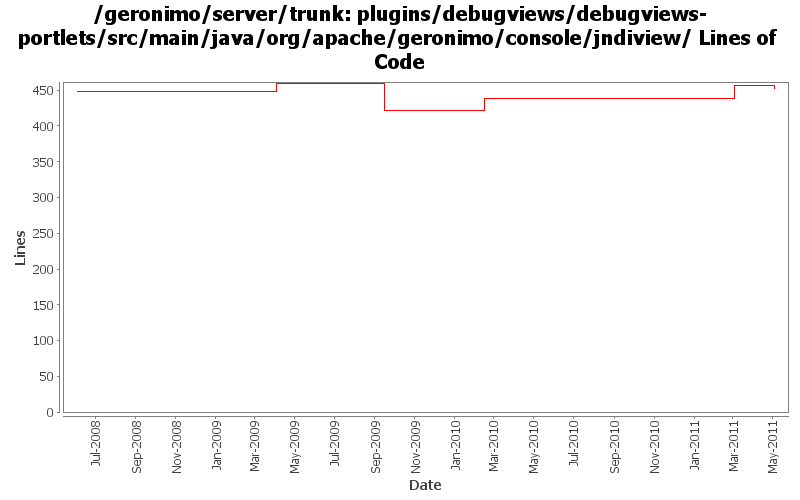

[root]/plugins/debugviews/debugviews-portlets/src/main/java/org/apache/geronimo/console/jndiview

| Author | Changes | Lines of Code | Lines per Change |
|---|---|---|---|
| Totals | 9 (100.0%) | 429 (100.0%) | 47.6 |
| rwonly | 2 (22.2%) | 339 (79.0%) | 169.5 |
| genspring | 1 (11.1%) | 34 (7.9%) | 34.0 |
| xiaming | 1 (11.1%) | 24 (5.6%) | 24.0 |
| dwoods | 1 (11.1%) | 17 (4.0%) | 17.0 |
| djencks | 1 (11.1%) | 13 (3.0%) | 13.0 |
| violalu | 1 (11.1%) | 2 (0.5%) | 2.0 |
| gawor | 2 (22.2%) | 0 (0.0%) | 0.0 |
GERONIMO-5892 An error window pops up when clicking on JNDI viewer, patch from Shenghao Fang
34 lines of code changed in 1 file:
GERONIMO-5874 Change ResourceBinding type from context to resourcebinding, avoiding cast exception in jndi portlet
2 lines of code changed in 1 file:
GERONIMO-5598 reenable debug view portlet, patch provided by Shenghao Fang
24 lines of code changed in 1 file:
add missing license headers
17 lines of code changed in 1 file:
GERONIMO-4790 Migrate debug-views code to base on the up-to-date dojo: Sub-task 1
339 lines of code changed in 2 files:
GERONIMO-4599 We don't need to instantiate refs to get a view of the jndi tree
13 lines of code changed in 1 file:
ensure jndi context is associated with the thread before quering it (GERONIMO-3976)
0 lines of code changed in 2 files: